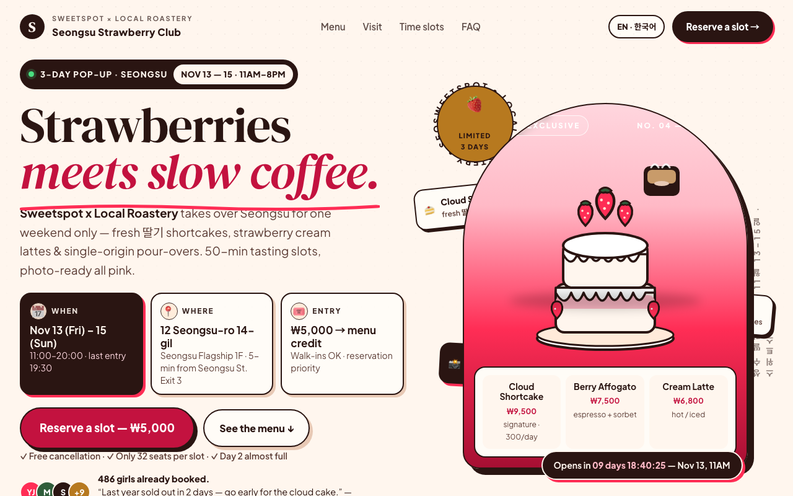
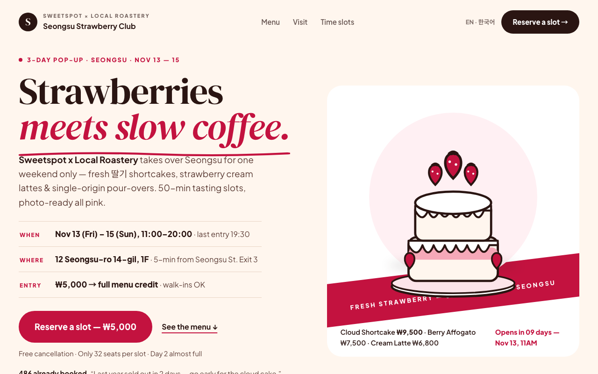

| issue | opened | resolved | attempts | tried |
|---|---|---|---|---|
| Object-shape (LO) and motion (MT) areas are low: a text-first screen with no clear object silhouette | r0 | open | 5 | r4: Replaced cut-off thin ribbon + vertical bob with inset diagonal ticket pill + oversized ti / r5: Removed cut-off ribbon + vertical bob; added dominant tilted strawberry silhouette + diago |
| Place areas (PPA/RSC) dominate: the background scene swallows the message | r0 | r2 | 2 | r1: Simplified arch to solid paper panel with cropped diagonal base, copy on solid card, remov |
| Early visual cortex (V1–V4) fires hardest while the aesthetic head is low: high contrast/texture density reads as clutter | r1 | r2 | 1 |
| r | ui | brain | judge | kept | changes | sourced photos |
|---|---|---|---|---|---|---|
| r0 | 0.593 | 0.537 | 0.67 | ✓ | ||
| r1 | 0.626 | 0.459 | 0.78 | ✓ | Enlarged cake to one dominant silhouette on halo + diagonal ink ribbon and bob a; Simplified arch to solid paper panel with cropped diagonal base, copy on solid c | |
| r2 | 0.679 | 0.670 | 0.75 | ✓ | Made cake the single dominant silhouette at 400px on plain halo with one diagona; Replaced arch scene with one cropped solid white panel owning the frame; copy mo; Removed dot texture, offset shadows and multicolor badges; single cream tone, in | |
| r3 | 0.627 | 0.440 | 0.81 | · | Replaced thin static ribbon + vertical bob with one dominant silhouette: oversiz | |
| r4 | 0.652 | 0.506 | 0.81 | · | Replaced cut-off thin ribbon + vertical bob with inset diagonal ticket pill + ov | |
| r5 | 0.679 | 0.596 | 0.81 | · | Removed cut-off ribbon + vertical bob; added dominant tilted strawberry silhouet |